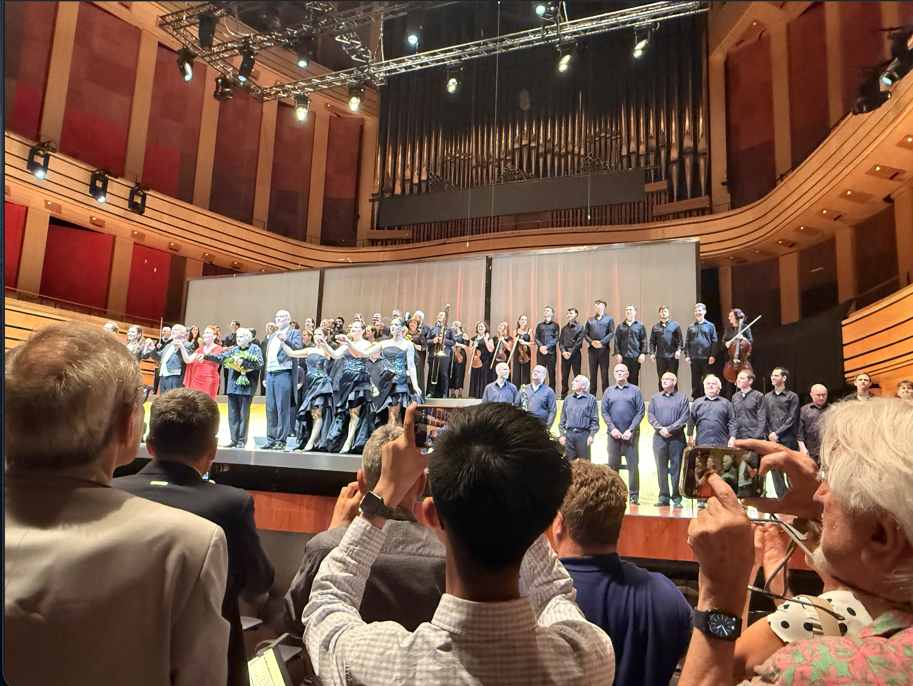

News
One can find news of me here, including acdemic news and daily life news.
2026.9.13
Days ago Terence Tao posted a letter on his website.
A Severe Misalignment of AI in Mathematics
Here I'm going to support.
2026.9
I found that a Prof of CUHK-Shenzhen is researching on Asymptotic Behavior and Applications of a Class of First-Order Algorithms Based on Conservation Quantities in Nonconvex Optimization. I'll try to learn something from that.
2026.6.25-28
I attended Budapest Wagner Days in Budapest, Hungary.

2026.6
I found myself interested in Prof. Arnulf Jentzen's work, so I'm planning to read some works of him on optimizers, like Convergence rates for Adam optimizers... And learn something from there. It's a lot to learn, and quite interesting, like he analysed where Adam convergence and how batch-size, moment of the noise influences it.